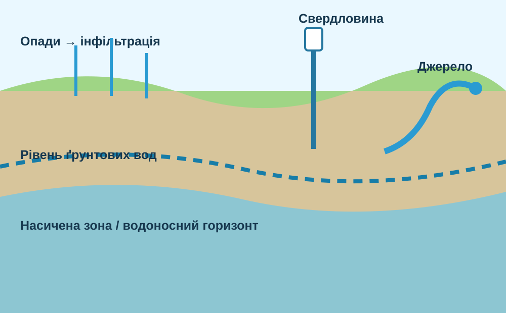
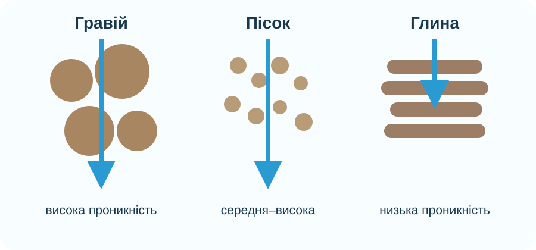
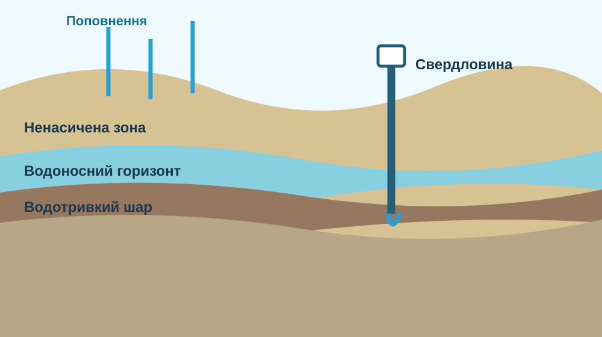

Підземні води
Вода в порах, тріщинах і порожнинах гірських порід під земною поверхнею.
Куди зникає дощова вода після того, як просочується в ґрунт? Чому одна свердловина дає воду, а інша — ні? І як звичайна підземна вода стає мінеральною або термальною?

Після зливи вода частково стікає поверхнею, частково випаровується, а частково просочується вниз. Учень стверджує: «Під землею вода збирається у великих порожніх печерах, як у басейнах».


Пористість — скільки порожнин може містити порода. Проникність — наскільки добре ці порожнини сполучені й пропускають воду.

Перемикайте умови й стежте, чи дістане свердловина до насиченої водою зони.
Карта OpenStreetMap показує розташування, але властивості води треба підтверджувати гідрогеологічними й хімічними даними.


Це якісна навчальна модель: реальний хімічний склад залежить від мінералогії, температури, часу контакту, газів та інших чинників.
У природі градієнт дуже неоднаковий. У вулканічних районах гарячі породи можуть нагрівати воду значно сильніше.
Після перегляду сформулюйте два речення: як вода потрапляє в аквіфер і як виходить із нього.
Вода в порах, тріщинах і порожнинах гірських порід під земною поверхнею.
Верхня межа насиченої водою зони; може підніматися після поповнення й знижуватися під час посухи або відкачування.
Проникний шар порід, що зберігає і передає достатню кількість підземної води.
Порода з дуже низькою проникністю, що сильно уповільнює рух води.
Підземна вода зі специфічним складом розчинених речовин і газів, сформованим взаємодією з породами.
Підземна вода, температура якої підвищена завдяки теплу надр Землі.
1. Опрацюйте §44. 2. Оберіть одне відоме джерело або курорт України з мінеральними/термальними водами. 3. Складіть паспорт: місце → тип води → звідки береться → одна властивість → надійне джерело інформації. 4. Не робіть медичних висновків: склад води й лікувальні показання — різні питання.
Електронний підручник / ВШО →